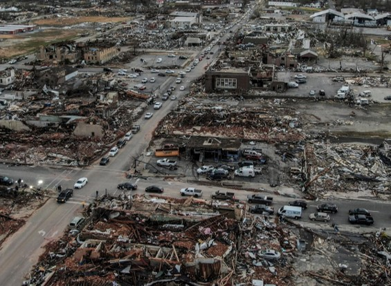
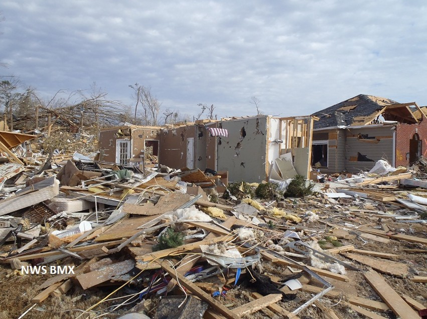
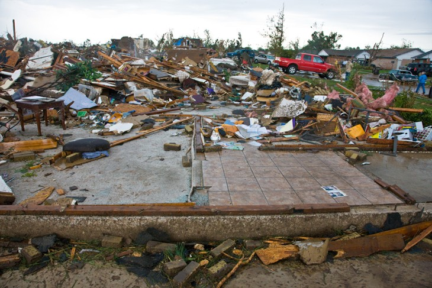
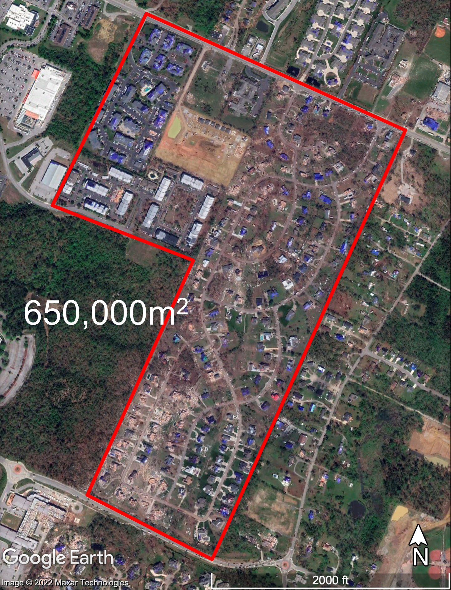
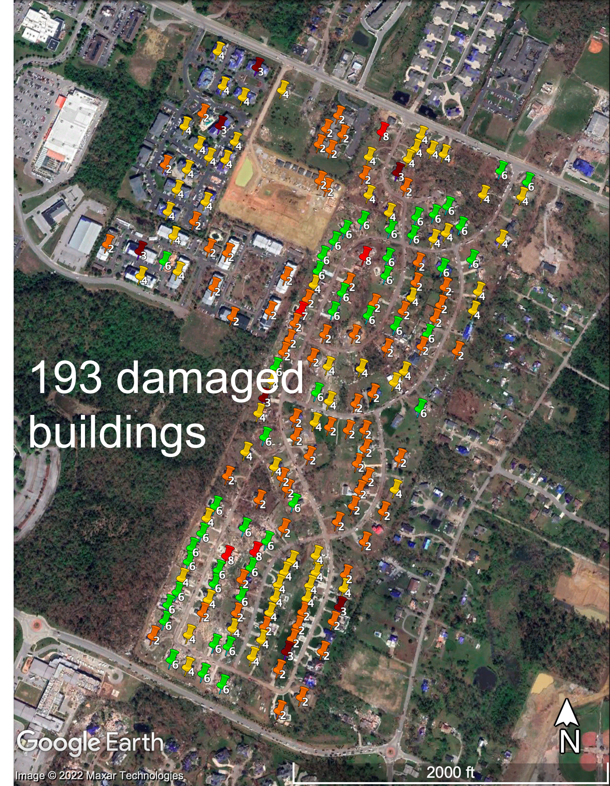
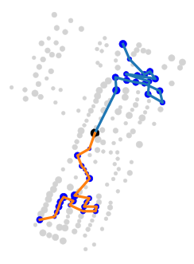

How can drones help responders find the hardest-hit buildings?
Responders need to know where the damage is worst.
After a tornado, entire neighborhoods can be affected. Emergency responders need to identify the hardest-hit buildings to prioritize their response efforts. But reviewing large volumes of drone imagery to assess building damage takes time.

Identifying building damage from the air.
We developed a deep-learning model to detect and classify building damage in aerial images. Trained using 24,496 annotated damage instances, the model achieved 71.9% mean average precision on the test data.


Putting the damage on the map.
In a Chattanooga tornado case study, recognition results were used to map 193 damaged buildings. The map shows where damaged buildings are located and how severely they were affected.


The damage map was manually constructed from recognition results.
Imagery: Google Earth · © 2022 Maxar Technologies.
Using damage to plan the next flight.
Building damage information can also guide subsequent drone inspections. Instead of treating every location equally, the optimization model prioritizes surveying more severely damaged buildings while accounting for available drones, flight speed, and battery life.

Mission planning was evaluated computationally using a real disaster case study, not through autonomous field deployment.
From aerial images to informed disaster response.
By connecting automated building damage recognition with drone mission planning, this research demonstrates how aerial observations can support damage assessment and help direct follow-up reconnaissance toward the hardest-hit locations.
Publications
Journal Article · 2023
Da Hu, Shuai Li, Jing Du, Jiannan Cai. Automating Building Damage Reconnaissance to Optimize Drone Mission Planning for Disaster Response. Journal of Computing in Civil Engineering, 37(3), 2023.
Research Report · 2022
Shuai Li, Amirsalar Moslehy, Da Hu, Mengjun Wang, Nicholas Wierschem, Khalid Alshibli, Baoshan Huang. Drones and Other Technologies To Assist in Disaster Relief Efforts. Tennessee Department of Transportation, RES2021-05, 2022.